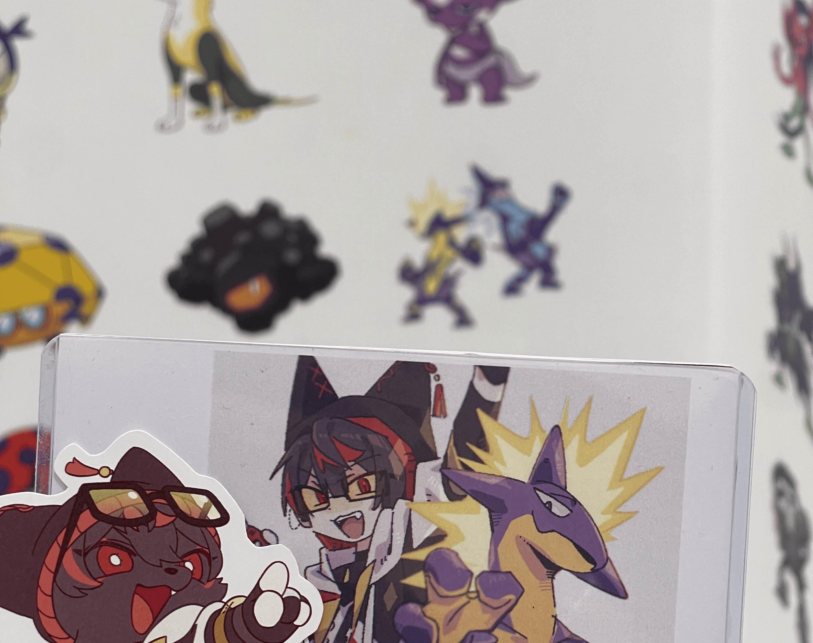
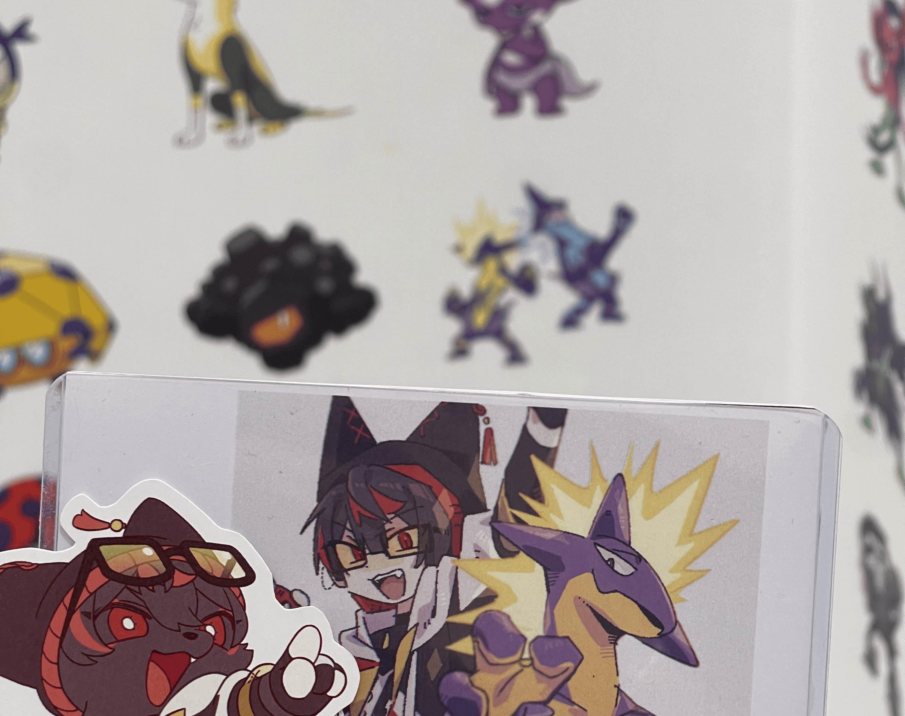

歡迎來到我介紹顫弦蠑螈的網站
這裡介紹了寶可夢顫弦蠑螈的一些基本相關資訊，包含基本介紹、技能與特性、進化。

 


上面是我自己一小部份的卡牌收藏跟去年去日本拍的紀念照，它們是我最喜歡的寶可夢。
還有一些扭蛋、娃娃之類的收藏太多了沒有拍。
這次透過程式設計的期中作業來用這個網站來簡單介紹一下它們。
音樂推薦
這是我最喜歡的歌，是寶可夢的曲，可以配合著一起看。
【Official】Pokémon Special Music Video 「GOTCHA！」 | BUMP OF CHICKEN - Acacia
即將登場
顫弦蠑螈在2024/11/23要在Pokémon GO初登場，到時候可以支持一下我們顫弦蠑螈。
顫弦蠑螈小知識
點擊按鈕來了解一條新的顫弦蠑螈小知識！